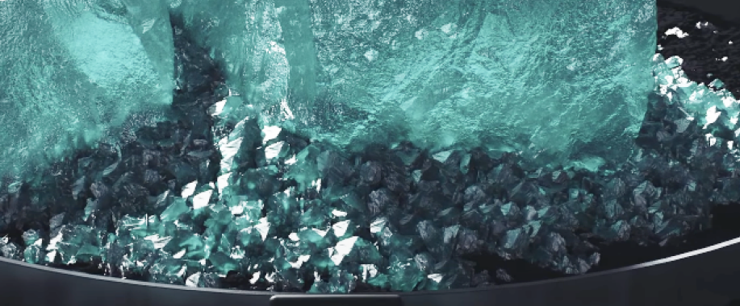
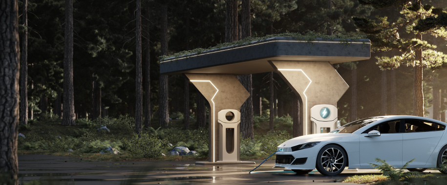
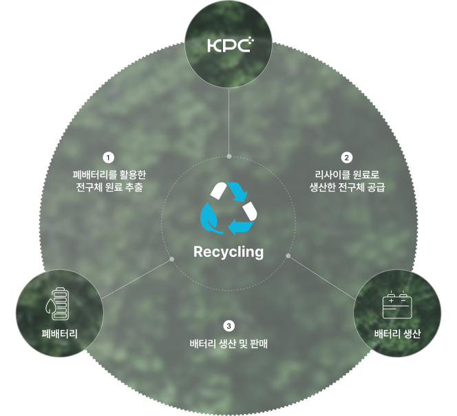
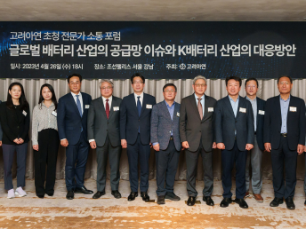

1
1
Toward a Sustainable Future
With Green Precursor
경쟁력
원료부터 판매까지
END TO END
VALUE CHAIN
END TO END
VALUE CHAIN
원료공급
합작사 KEMCO로부터 전구체 제조 원료인 황산니켈을
직접 조달하여 외부 요인에 영향을 받지 않는 안정된 원료 공급망 확보
직접 조달하여 외부 요인에 영향을 받지 않는 안정된 원료 공급망 확보

전구체 생산
리싸이클 원료를 활용한 친환경 전구체 생산 및
높은 기술력과 최신 전구체 생산공정 적용을 통한 제품 경쟁력 제고
높은 기술력과 최신 전구체 생산공정 적용을 통한 제품 경쟁력 제고

제품 판매
합작사 LG 화학의 산업 인프라를 활용한 고정된
수급처 확보로 공급-생산-판매로 이어지는 산업 순환구조 구축
수급처 확보로 공급-생산-판매로 이어지는 산업 순환구조 구축



고려아연, K-배터리 산업의 미래
모색하는 ‘전문가 소통 포럼’ 개최
모색하는 ‘전문가 소통 포럼’ 개최
고려아연이 지난 26일 K-배터리 산업의 현황과 미래 대응 방안 모색을 위한 ‘전문가 소통 포럼’을 개최했다. 이번 포럼은 배터리 산업이 차세대 먹거리로 부상하는 가운데 이를 둘러싼 고려아연이 지난 26일 K-배터리 산업의 현황과 미래 대응 방안 모색을 위한 ‘전문가 소통 포럼’을 개최했다.
2022.05.31
